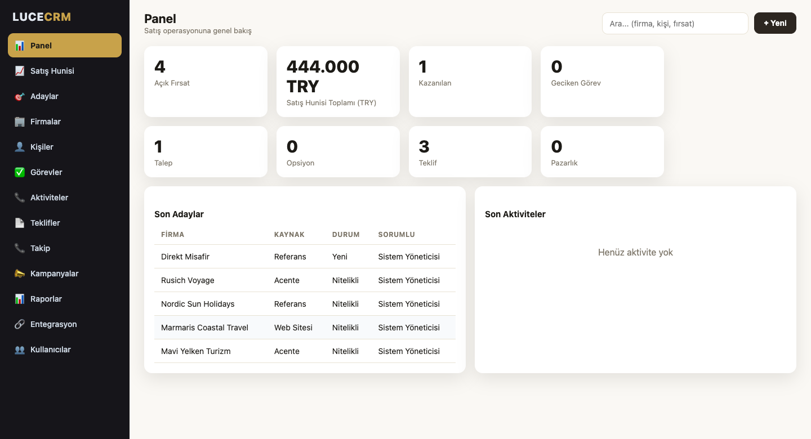
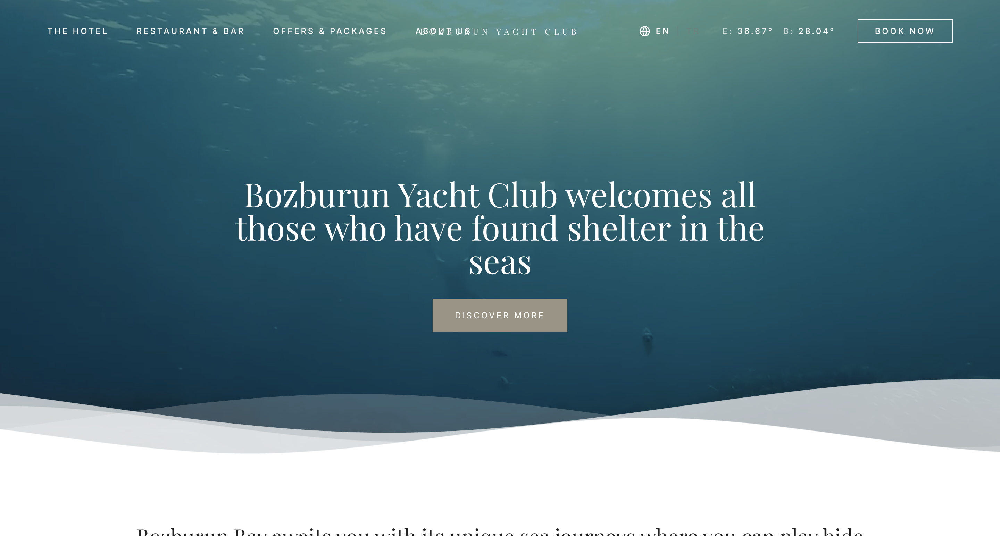
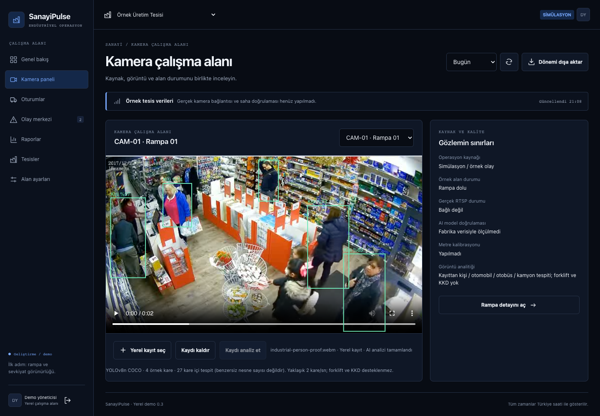
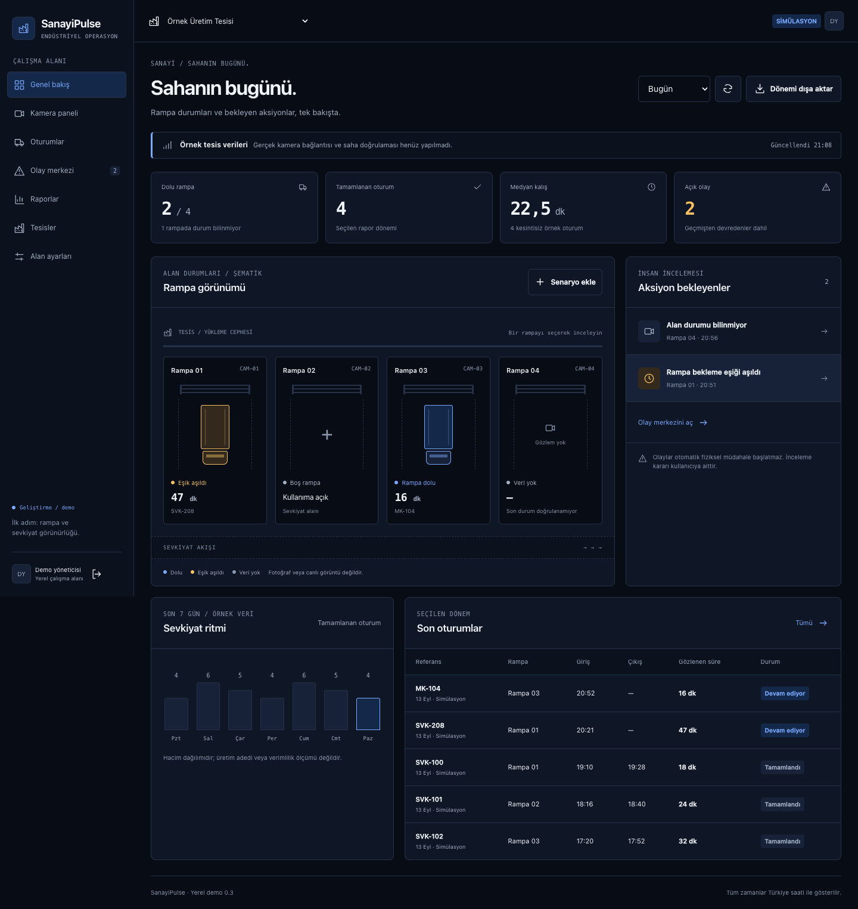
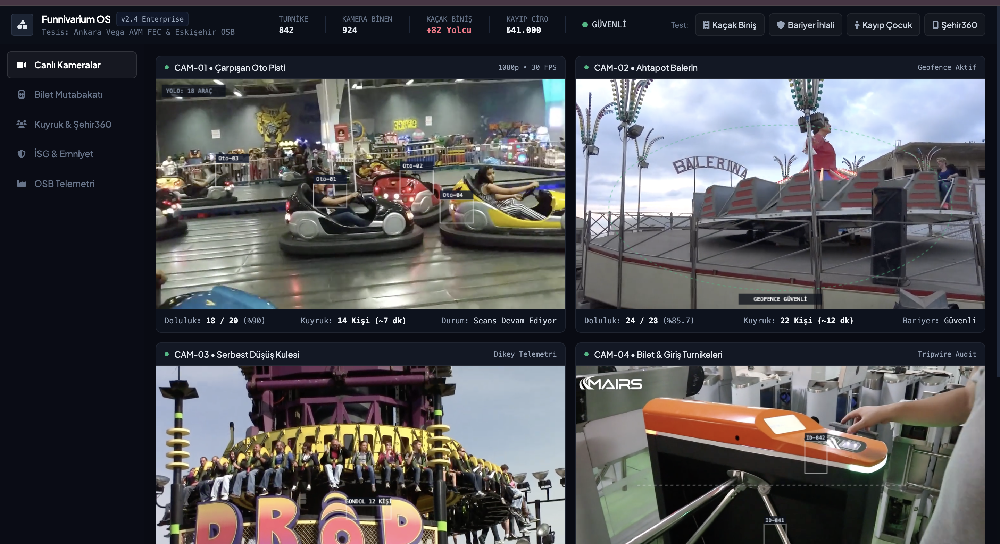
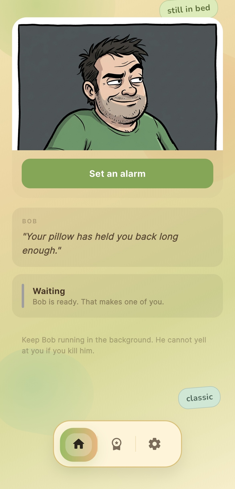
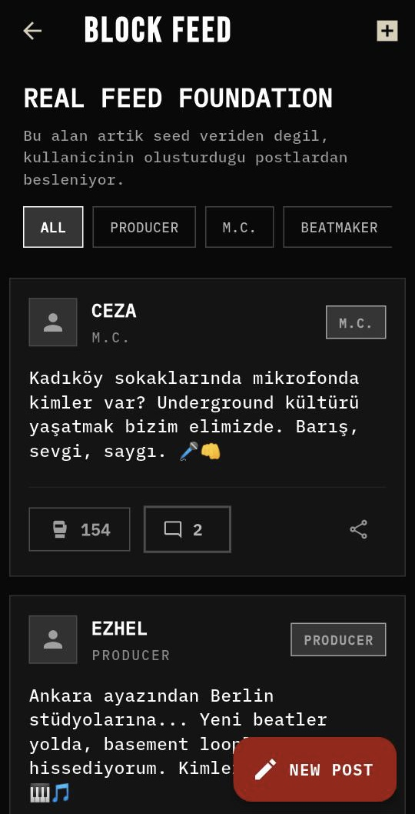
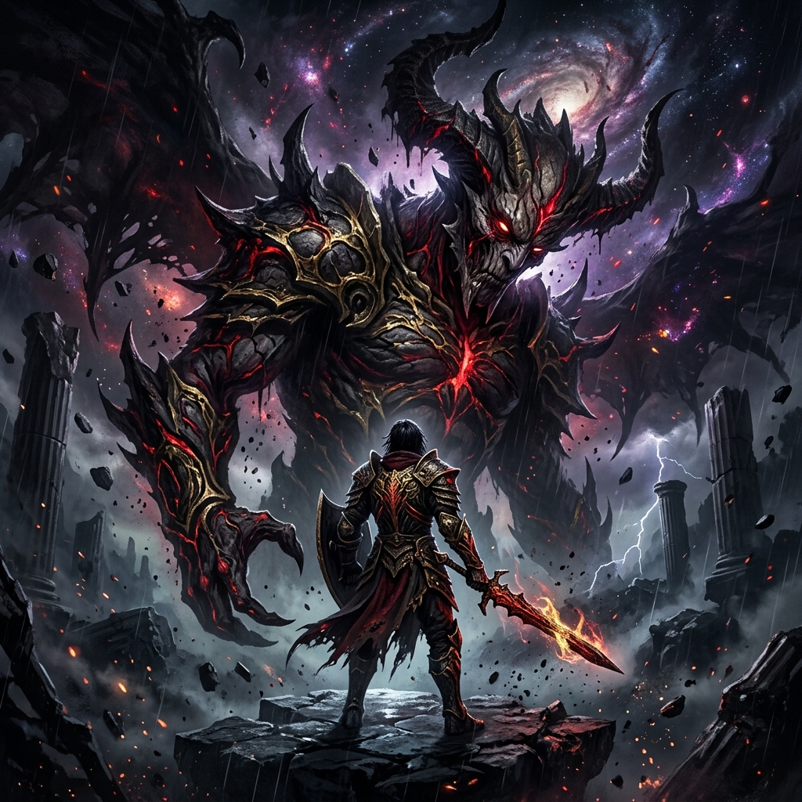
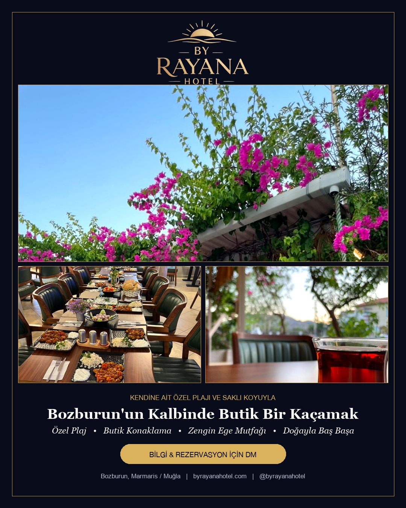

Fikirden Canlı Sisteme:
Yüksek Kaldıraçlı Dijital Yazılım ve Sistemler
Eskişehir Osmangazi Üniversitesi Endüstri Mühendisliği öğrencisi olarak; süreç optimizasyonu, yöneylem araştırması ve operasyonel verimlilik ilkelerini modern yazılım mimarisiyle birleştiriyorum. Lüks butik otel ERP omurgalarından uçta çalışan bilgisayarlı görü ve kaçak önleme sistemlerine, mağazada canlı mobil uygulamalardan programatik medya motorlarına kadar tüm sistemleri problem çözme ve katma değer odaklı inşa ediyorum.

Biyografi, Yaşam Kültürü & Geçmiş
Merak ve hiper-odakla beslenen kişisel vizyon, çok kültürlü yaşam deneyimi ve kronolojik mühendislik sorumlulukları.
Salih Burkay Bozyel
Çocukluk yıllarımda konulan DEHB (ADHD) tanısını bir kısıt değil; zihinsel bir hiper-odaklanma gücü, tükenmeyen öğrenme açlığı ve araştırma motoru olarak benimsedim. Turistik bölgelerde büyümenin kazandırdığı doğal çift dillilik ve ileri seviye İngilizce altyapısıyla; dünya gündemini, modern yapay zekâyı, kuantum mekaniğini ve yeni nesil motor/tahrik teknolojilerini her gün bir önceki günden daha ileri taşımak üzere takip ediyorum.
Dünyayı, insan doğasını ve toplumları derinlemesine anlayabilmek adına 2 yılımı Güneydoğu Asya'da geçirdim. Lise yıllarımda dönemin önde gelen isimleriyle 8 büyük hip-hop konseri organize etmenin getirdiği operasyonel refleks, 3 yıllık lisanslı amatör basketbol disiplini, dünya mutfaklarına duyduğum gastronomi tutkusu, Anadolu rock ve elektronik müziğe olan hayranlığım kendime has çok katmanlı bir üretim kültürü oluşturdu. Hayatın getirdiği dönemsel engeller sebebiyle bir süre ara verdiğim ESOGÜ Endüstri Mühendisliği eğitimimde edindiğim süreç optimizasyonu ve yöneylem disiplinini geliştirdiğim tüm canlı yazılımlara aktararak aktif eğitim hayatıma geri döndüm.
Kurucu & Yazılım Geliştirici
AEON LLCButik otel ve restoranlar için modüler AEON Hospitality ERP'sinin mimarisini sıfırdan kurdu. Perakende ve sanayi sahaları için Nvidia Jetson tabanlı RetailPulse AI / SanayiPulse bilgisayarlı görü motorunu geliştirdi. Global mobil ekosistemde Vent (v3.0.5/3.0.6) ve Forge ürünlerinin teknik omurgasını yönetti.
- Node.js 20, Express, AlaSQL/SQLite ve Cloudflare D1 üzerinde çok kiracılı (multi-tenant) veri izolasyonu mimarisi kuruldu.
- HotelRunner API ile Booking.com ve Airbnb için çift yönlü gerçek zamanlı kanal senkronizasyonu entegre edildi.
- YOLOv8 + ByteTrack ile %100 yerel (on-prem) kamera analitiği ve 1.5m temas süresi korelasyon pipeline'ı kodlandı.
Bağımsız Yazılım Geliştirici & Mobil Sistem Geliştiricisi
Bağımsız Ar-Ge & Ürün GeliştirmeÇapraz platform mobil uygulamalar (Flutter), dağıtık veri tabanları ve gerçek zamanlı sistemler üzerine yoğunlaştı. Vent uygulamasının çekirdek mimarisini, 37 dilli yerelleştirme sistemini ve konu odaklı eşleşme protokolünü sıfırdan tasarlayıp App Store ve Google Play üzerinde yayınladı.
- Flutter ve Firebase Firestore ile sıfır kesintiyle çalışan küresel eşleşme ve sohbet motoru geliştirildi.
- Uygulama içi satın alma (IAP) ve abonelik akışları RevenueCat ve mağaza köprüleriyle canlıya alındı.
Kültürel Keşif & Küresel Saha Gözlemi (2 Yıl)
Bağımsız Yaşam & Vizyon GeliştirmeDünyayı, farklı kültürleri ve insan doğasını yakından tanıyıp vizyonunu genişletmek amacıyla Güneydoğu Asya'da 2 yıl bağımsız yaşam ve saha araştırması yürüttü. Çok kültürlü problem çözme yeteneğini ve küresel insan perspektifini pekiştirdi.
- Farklı kültürler ve uluslararası topluluklar arasında doğrudan adaptasyon ve kriz çözme becerisi.
- Kendi yaşam ve çalışma kültürünü küresel dinamikler ve yerel gözlemlerle zenginleştirme.
Eskişehir Osmangazi Üniversitesi (ESOGÜ)
Endüstri Mühendisliği Bölümü (Lisans Öğrencisi)Üretim ve hizmet süreçlerinin optimizasyonu, yöneylem araştırması, darboğaz analizi ve sistem dinamiği temelleri. Hayatın getirdiği dönemsel engeller sebebiyle bir süre ara verilmiş olsa da edinilen tüm analitik mühendislik disiplinleri canlı yazılım ve ERP sistemlerine fiilen uygulandı; eğitim hayatına aktif olarak devam etmektedir.
- Sistem analizi ve süreç iyileştirme prensiplerinin dijital ERP/SaaS platformlarına uyarlanması.
- Saha bilgisayarlı görü ve veri akışlarında operasyonel verimlilik ve kayıp/kaçak önleme modellemeleri.
Mustafa Kaynak Anadolu Lisesi & Hip-Hop Organizasyonları
Sayısal Bölüm Mezuniyeti & 8 Konser DirektörlüğüSayısal bölüm eğitimi süresince dönemin tanınmış sanatçılarıyla 8 büyük hip-hop konseri ve kültür etkinliğinin uçtan uca organizasyon, sanatçı iletişimi ve biletleme operasyonlarını yönetti. 3 yıl lisanslı amatör basketbol oynadı; analitik düşünceyi yaratıcı organizasyon liderliğiyle birleştirdi.
Bilgi & Yeterlilikler
Üretim kalitesinde kullanılan diller, çerçeveler, mimari desenler ve altyapı yetkinlikleri.
Mobil Uygulama
Sunucu & Veri Tabanı
Yapay Görü (Edge AI)
Veri & Güvenlik
Web & Medya
Entegrasyonlar & Yapay Zekâ
ERP, CRM & Web Sistemleri
Butik oteller, restoranlar ve marinalar için geliştirilen uçtan uca dijital omurga ve lüks web vitrinleri.
 Görseli İncele
Görseli İncele
AEON Hospitality Core ERP & POS
Lüks butik oteller ve restoranlar için rezervasyon, oda folyoları, plaj/şezlong QR menü siparişleri ve mutfak şef ekranını (KDS) tek merkezde birleştiren işletim sistemi. Departmanlar arası koordinasyon kopukluğunu bitirir; masadan verilen siparişlerin kaybolmasını ve tahsil edilmeyen servis kaçaklarını sıfırlar.
 Görseli İncele
Görseli İncele
HotelRunner Çift Yönlü Kanal Entegrasyonu
Otelin yerel oda yönetim sistemi ile Booking.com, Airbnb ve Expedia arasında anlık çift yönlü veri köprüsü kurar. Misafiri kapıda bırakan çifte rezervasyon (overbooking) riskini, acente ceza puanlarını ve personelin saatler süren manuel veri giriş yükünü ortadan kaldırır.

Görseli İnceleButik İşletme CRM & Satış Paneli
WhatsApp, telefon ve DM üzerinden gelen tüm konaklama ve özel etkinlik taleplerini aşamalı bir satış hunisinde (pipeline) toplayan müşteri ilişkileri platformu. Personelin yoğunlukta unuttuğu yüksek değerli misafir taleplerini ve fiyat tutarsızlıklarını önleyerek doğrudan satış kapanış oranını artırır.

Görseli İnceleLüks Butik Otel & Marina Web Portalları
Seçkin kıyı otelleri ve marinalar için tasarlanan yüksek hızlı editoryal vitrin ve doğrudan rezervasyon motoru. Acentelere ödenen %15-%25 komisyon kesintilerini ortadan kaldırır ve üst segment misafire hitap eden prestijli marka kimliğini tesis eder.
Edge AI & Kamera Analitiği
Mevcut güvenlik kameralarını buluta bağımlı kalmadan; perakende dönüşüm, fabrika lojistiği ve eğlence parkı analitik merkezine dönüştüren yapay zekâ hattı.

Görseli İnceleRetailPulse AI: Perakende Davranış Analitiği
Mağazadaki mevcut tavan kameralarından müşteri trafiğini ve reyon önü bekleme sürelerini ölçen, POS kasa fişleriyle eşleştirerek gerçek satışa dönüşüm oranını (% Conversion) hesaplayan yerel bilgisayarlı görü motoru. Görüntüleri buluta aktarmadan RAM üzerinde işleyip silerek %100 KVKK güvencesi sağlar.

Görseli İnceleSanayiPulse: Fabrika & Rampa Lojistiği
Ağır sanayi tesisleri ve yükleme rampalarında TIR giriş-çıkış sürelerini, rampa doluluklarını ve İSG güvenlik koridorlarını 7/24 izleyen endüstriyel görü sistemi. TIR bekleme sürelerinden doğan lojistik gecikme (demurrage) cezalarını ve fabrika içi forklift kazalarını önler.

Görseli İnceleFunnivarium OS: Turnike & Kaçak Biniş Denetimi
Eğlence ve ulaşım tesislerinde turnikeden okutulan bilet sayısı ile kameranın tespit ettiği gerçek biniş sayısını anlık olarak karşılaştıran denetim paneli. Bilet basmadan turnikeden atlayan veya usulsüz geçen binişleri anında yakalayarak her gün uğranılan ciddi bilet geliri sızıntısını durdurur.
Uçta Donanım Mimarisi & %100 KVKK Güvencesi
Video akışları internete veya üçüncü taraf bulut sağlayıcılarına asla iletilmez. Tüm tespitler yerel Nvidia Jetson Orin veya endüstriyel Mini PC ünitelerinde RAM üzerinde işlenir ve ham kareler analiz bittiği milisaniyede silinir. Merkeze yalnızca anonim JSON telemetri verisi akar.
Mobil Uygulamalar (Canlı & Geliştirilenler)
App Store ve Google Play'de küresel kullanıcıya ulaşan canlı ürünler ve yayına hazırlanan mobil topluluklar.
 Görseli İncele
Görseli İncele
Vent: Duygusal Destek & Anonim İletişim Ağı
İnsanları profil fotoğrafları veya takipçi sayıları yerine konuşmak istedikleri spesifik duygu ve 222 konu başlığı üzerinden 1-e-1 anonim dertleşme odalarında buluşturan mobil uygulama. Sosyal medyanın dayattığı dış görünüş ve beğeni baskısını kaldırır; çift taraflı rıza ve otomatik sızıntı filtresiyle güvenli iletişim sağlar.
 Görseli İncele
Görseli İncele
Forge: Sporcu Topluluğu & Antrenman Ağı
Sporcuların antrenman rekorlarını (PR), programlarını ve videolarını paylaştığı; harita üzerinden yakınındaki spor salonlarını ve seviyesine uygun antrenman partnerlerini bulduğu dikey sosyal ağ. Yalnız antrenman yapmaktan kaynaklanan motivasyon kaybını ve salonda partner bulma zorluğunu çözer.

Görseli İnceleBOB: Erteleme Karşıtı Alaycı Akıllı Alarm
Sabah alarmını sürekli erteleyen kullanıcıları; standart melodiler yerine yapay zekâ destekli alaycı, sert sesli uyarılar ve zorunlu mantık görevleriyle yataktan kaldıran disiplin motorudur. Erteleme refleksini ve güne geç başlama döngüsünü bilişsel görevlerle kırar.

Görseli İnceleUNDRGRND: Bağımsız Hip-Hop & Cypher Odaları
Beatmaker'lar ile rap sanatçılarının canlı beat odalarında sırayla ses kaydedip parçalar ürettiği dijital sokak müzik platformu. Bağımsız müzisyenlerin stüdyo kiralama masrafı olmadan cep telefonu üzerinden serbest stil ve verse kaydetmesini sağlar.
Ekstralar: Makaleler, Yazılar & Ar-Ge
Mimari araştırma raporları, kod tabanlı video otomasyonu ve animasyon dizisi senaryo tasarımı.
Bilimsel Makaleler & Felsefi İncelemeler
Matematik felsefesi, kuantum ölçüm problemi, görelilik ve zamanın döngüselliği üzerine kaleme alınmış kapsamlı araştırma metinleri.

Görseli İnceleAbyssal Engine: Bilimkurgu Evren Tasarımı
+24 yetişkin psikolojik bilimkurgu ve distopya evreninde geçen, 5 sezon ve 40 bölümden oluşan kapsamlı senaryo mimarisi ve prodüksiyon üretim incilidir (Series Bible). Kurgusal dünya kuralları, karakter ilişkileri ve dramatik çatışma matrislerini eksiksiz belgeler.

Görseli İnceleBy Rayana: React Tabanlı Otomatize Video Motoru
Video kurgu programı açmadan React bileşenleri ve Python betikleriyle dinamik fiyatlı kampanya videolarını ve hikayeleri saniyeler içinde render eden otomasyon motoru. Tasarımcılara ödenen yüksek ajans maliyetlerini ve saatler süren manuel montaj yükünü sıfırlar.
Özel MCP Sunucuları & Otonom Ajan Hattı
Claude ve DeepSeek büyük dil modellerini güvenli yerel köprülerle şirket içi veritabanlarına bağlayan Model Context Protocol (MCP) sunucuları. Ajanların kod tabanlarını bağımsız denetlemesini ve iş akışlarını yürütmesini sağlayan protokol mimarisi.
Canlı Demo ve Ortaklık Görüşmesi İçin İletişime Geçin
Görüşmede doğrudan canlı projeler (Vent App, AEON ERP, RetailPulse AI) üzerinden sistem mimarilerini canlı demo yapmaya hazırım.